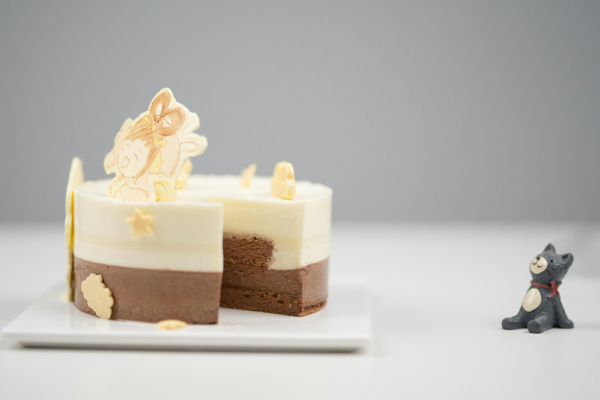

This is a delicious and creamy Vanilla Cake recipe that's perfect for a sweet treat.
In a saucepan over low-temperature, heat the Alfredo sauce.
Bring a large pot of lightly salted water to a boil.
Add pasta and cook for 8 minutes or until al dente; drain.
Boil shrimp in a large pot of water until they turn orange.
Then place in bowl with melted butter.
Let shrimp marinate for 15 to 30 minutes; remove.
In a large skillet over medium heat, saute the green pepper
and onion in a small amount of oil.
Mix together the cooked pasta, shrimp,
pepper-onion mixture and Alfredo sauce.
Season with garlic powder and cumin.